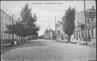
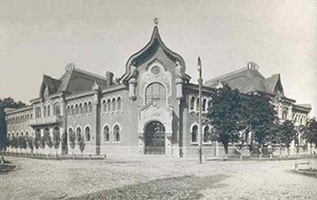
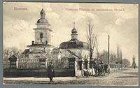

About me
My name is Andrii. I was born in the 5 th of May, 1992 in Poltava, which is the town of Ukraine. I am twenty-six years old. I have the best parents in the world. They always support me and give me sound advice. There are many interesting and exciting things to do when you are spending your free time. Each person has his interests and hobbies such as reading books, watching TV, going in for sports. As for me, I have many hobbies: they are – сycling, snowboarding, travel and web development. I also fond of reading books. My favorite books are adventures, biography. Your free time is not wasted.

Let me tell you about my hometown
Poltava — one of the most interesting towns of Ukraine — is situated on the picturesque bank of the river Vorskla. Poltava was first mentioned in chronicles as Ltava in 1174. This old name changed only in 1430. The history of Poltava is full of different events. Since 1569 it was a part of Poland. And only in 1667 it became a part of Russia. The town is also well-known thanks to Poltava battle, when Peter the Great with his army defeated the Swedish army of Karl XII.
History of Poltava
The centre of the old city is a semicircular Neoclassical square with the Tuscan column of cast iron (1805-11), commemorating the centenary of the Battle of Poltava and featuring 18 Swedish cannons captured in that battle. The five-domed city cathedral, dedicated to the Exaltation of the Cross, is a superb monument of Cossack Baroque, built between 1699 and 1709. Another frothy Baroque church, dedicated to the Dormition of the Theotokos, was destroyed in 1934 and rebuilt in the 1990s.